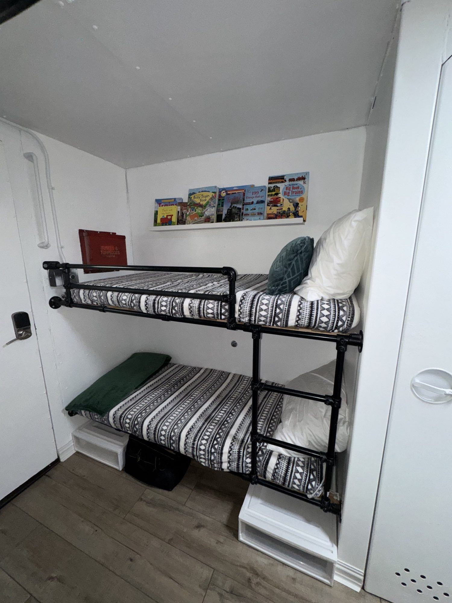
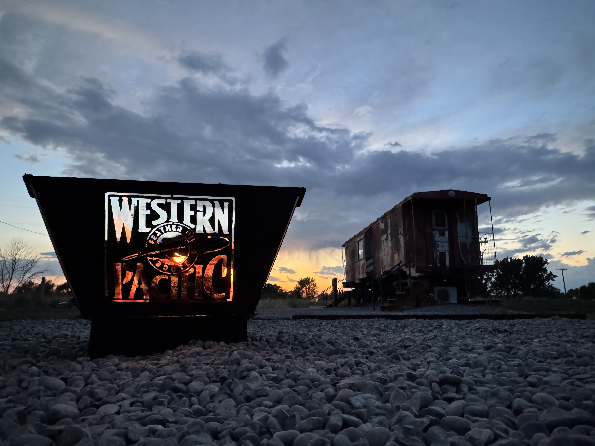
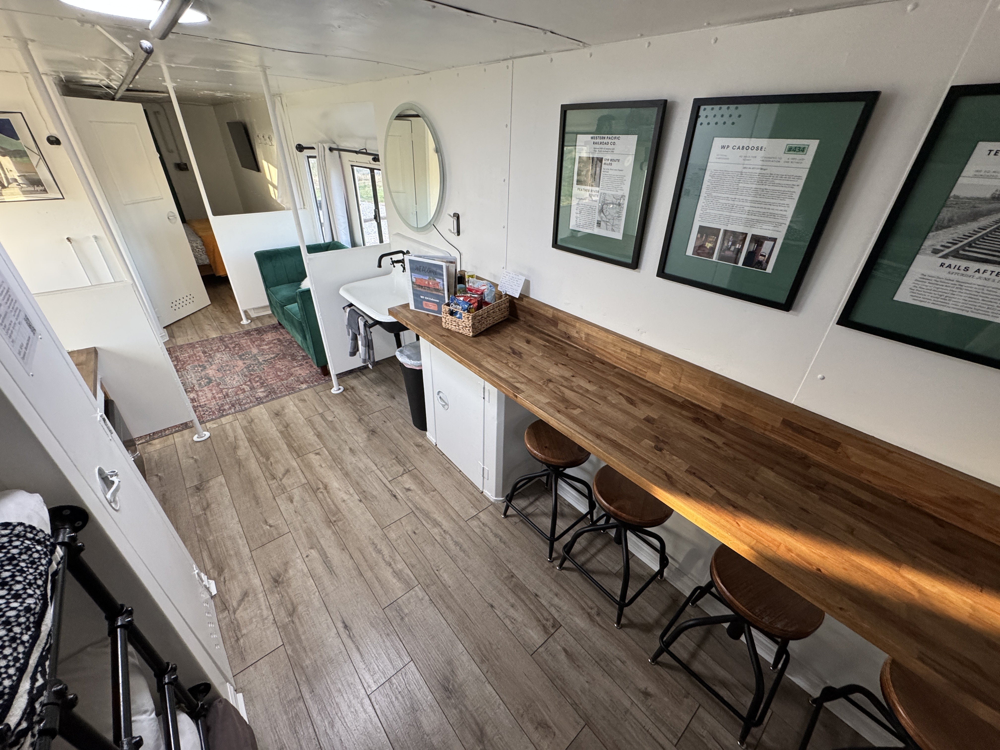
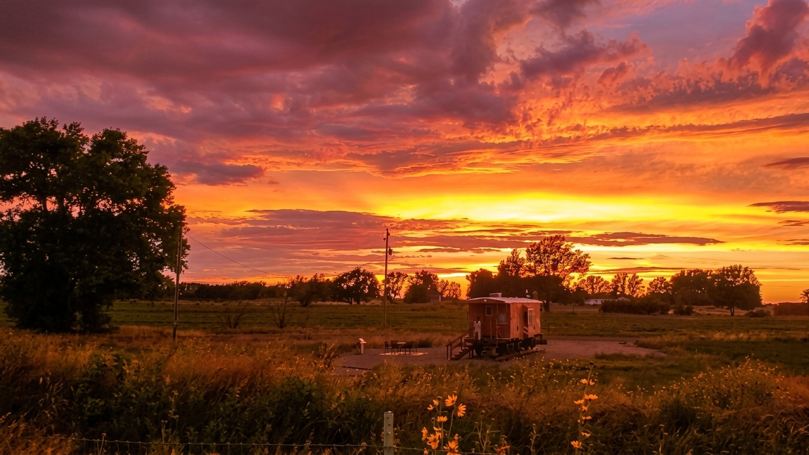

About 434
WP 434 is a Historic Western Pasific train caboose that has be convereded into a cozy tiny home Located just outside Blackfoot Idaho. It is open from ___ to ____ every year.

Amenities
Sleeping accommodations:
- One full Bed
- Two bunk beds, 27”x63” (smaller than twin)
- Infant bed available on request




Freatures:
- Built in bar with microwave and minifriges
- Cozy living space freaturing chairs and a loveseat
- Half bath shower and toilet
- Outdoor firepit wood and rosting sticks provided



Built in 1955 by the International Car Company in Kenton, Ohio, for the Western Pacific Railroad, No. 434 originally featured a simple brown and yellow paint scheme—remnants of which are still visible today—and spent most of its service plying Western Pacific routes between northern California and Utah. After receiving a fresh refurbishing in 1981, its railroad career was cut short when Union Pacific acquired Western Pacific and emerging technologies made cabooses obsolete, leading to its retirement in Pocatello, Idaho, by 1984. Saved from the scraper's yard, the caboose spent decades serving as a storage shed on a farm before being purchased in the early 2020s, relocated to Menan were it was converted into a tiny home in 2025 it changed hands and was moved to its current home in Blackfoot, Idaho.




Built in 1955 by the International Car Company in Kenton, Ohio, for the Western Pacific Railroad, No. 434 originally featured a simple brown and yellow paint scheme—remnants of which are still visible today—and spent most of its service plying Western Pacific routes between northern California and Utah.
After receiving a fresh refurbishing in 1981, its railroad career was cut short when Union Pacific acquired Western Pacific and emerging technologies made cabooses obsolete, leading to its retirement in Pocatello, Idaho, by 1984. Saved from the scraper's yard, the caboose spent decades serving as a storage shed on a farm before being purchased in the early 2020s, relocated to Menan were it was converted into a tiny home in 2025 it changed hands and was moved to its current home in Blackfoot, Idaho.